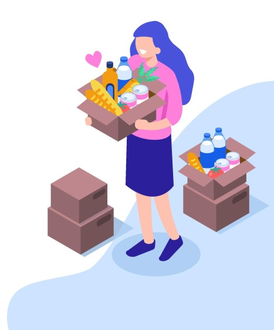

OLAS DE AYUDA
Olas de Ayuda fue un proyecto creado por una de mis profesoras de secundaria, se basaba en crear actividades enfocadas en ayudar a los niños más necesitados y al ambiente en general. Las actividades que se hacían era salir a recoger basura, donar alimentos, juguetes y útiles escolares a aquellos que les fueran a dar un uso digni..
Una de las actividades en las que participé de este proyecto fue ir a una escuela de bajos recursos y donar alimento y útiles escolares. Mis compañeros y yo realizamos juegos y actividades para pasar tiempo de calidad con los niños y comimos tortas junto a ellos. Esta actividad me hizo darme cuenta de la posición privilegiada en la que me encuentro y en cómo debo aprovechar cada oportunidad que se me presenta. Creo que es uno de los proyectos más humanos en los que he participado y me encantó cómo la desarrollamos.